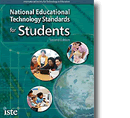

NETS
NETS - National Education Technology Standards for Students

Creativity and Innovation
Communication and Collaboration
Research and Information Fluency
Critical Thinking, Problem Solving, and Decision Making
Digital Citizenship
Technology Operations and Concepts
NETS Booklet
(pdf)